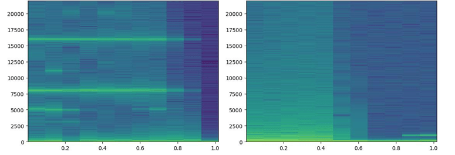

Introduction
The Battle Field Sensing Radar (BFSR) is a fully coherent Pulse-Doppler radar. It works at a meagre peak power of 5W that makes it difficult to detect by enemy sensors. The radar operates over 21 channels in J band (10 to 18/20 GHz). It is operable in all weather conditions and during day and night. BFSR is portable and is mountable on vehicles. Presently, the doppler sounds generated from battlefield sensing radar (BFSR) by different targets are manually classified. The human resources that rank these signals are trained over a significant period. Only after rigorous training, they can distinguish the signals generated by various categories of targets. In general, these categories are 1. Crawling man, 2. Group of men, 3. Light vehicle and 4. Heavy vehicle.Presenting and handing over the ML based system to MCME.
ML for BFSR target type classification
The Doppler sound effects from above four sources are significantly different. We use machine learning algorithms to train a model to be able to detect these differences and reasonably accurately predict the source. We use convoluted neural network (CNN) implementation of TensorFlow, which is open-source software, supported by google to implement algorithms that use neural networks to train models. Current online resources show that TensorFlow is better on several fronts compared to its peers. The research is readily available on the internet. The training process consists of collecting the data from different radar setups. Each of such data is collected and sanitised; this involves removing background noises, removing silence and then clipping them to appropriate size.Sample code snippet from code that sanitises audio data:
for i in $(find "${d}" -name "*.wav" -print | sed 's/ /_/g')
do
echo $i
b=$(basename $i)
echo $b
p=$(dirname $i)
echo $p
mkdir -p "$f/$p"
sox $i "$f/$p/${b}.wav" silence 1 0.1 2% -1 0.1 2%
done
Sample code snippet from code that splits audio into aqual size samples:
for i in $(find "${d}" -name "*.wav" -print | sed 's/ /_/g')
do
echo $i
b=$(basename $i)
echo $b
p=$(dirname $i)
echo $p
mkdir -p "$f/$p"
ffmpeg -i $i -f segment -segment_time $n -c copy "$f/$p/${b}_%03d.wav"
done
The sanitised wave files are then transformed to spectrograms using fast Fourier transform.
def fourierfft(wav_file):
sr,data = readwave(wav_file)
fft_out = fft(data)
plt.plot(data, np.abs(fft_out))
plt.savefig(wav_file.split('.wav')[0]+'.png',
dpi=100, # Dots per inch
frameon='false',
aspect='normal',
bbox_inches='tight',
pad_inches=0)
plt.close()
try:
im = Image.open(wav_file.split('.wav')[0] + '.png')
rgb_im = im.convert('RGB')
rgb_im.save(wav_file.split('.png')[0] + '.jpg')
except Exception as e:
print (e)
if os.path.exists(wav_file.split('.wav')[0] + '.png'):
os.remove(wav_file.split('.wav')[0] + '.png')
The sanitised data is passed to a custom Tensorflow based training process. A significant amount of information is given thru the training module while keeping a
small percent for testing. A model and the confusion matrix generated after this process shows how well the training happened.

Fig 1. Sample FFT generated spectograph of doppler sound spanning 1 second; the first one is from a group of man, second is from a light vehicle.
The target types are predicted using the real-time sound captured from the radars audio out. The sanitized data clipped to an appropriate size is then funneled thru ML algorithms. The predictor with the model then classifies the input signal into one of the categories with a confidence value. This value can help tune the sensitivity of the prediction algorithm.
ML Phases
The diagram below depicts the two phases.
Fig 2, Shows the logical flow of events for the two phases 1. Training and 2. Prediction.